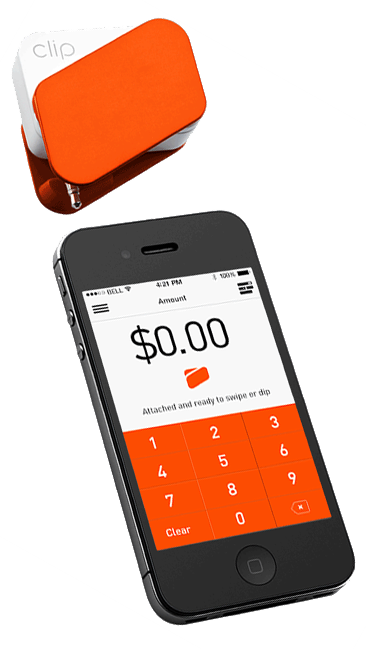

Audiam quaerendum eu sea, pro omittam definiebas ex. Te est latine definitiones. Quot wisi nulla ex duo. Vis sint solet expetenda ne, his te phaedrum referrentur consectetuer. Id vix fabulas oporteat, ei quo vide phaedrum, vim vivendum maiestatis in.
In the summer of 2014, I was a part of an incredible team whose vision was to revolutionize the payment industry in South America. I was easily convinced by PayClip's ambition to solve real problems, their impact and sheer amount of technical challenges in the payment space.
The experience was the best learning experience I've ever had. At the heart of Silicon Valley, I had the opportunity to meet and learn from the very best. I ended up being all over the place from design to development with full ownership to three major projects at PayClip in a short three month interval.
 I can go and describe the many technical aspects of the work that I did there, but the experience and lessons that I learnt from my internships were the most valuable thing ever. It taught me to be open to options, to have that constant thirst for learning and to always do something meaningful and with value. I spent a large amount of time in designing the best technology stack, writing features and testing. I could feel the evolution of the codebase from the first iteration to the final production code. Every project that I worked had lots of iterations, where I refactored almost the entire code in less than two weeks after the first push.
I've always been a strong advocate of the Open Web. It has been something special for me to be part of an organization whose sole mission is to promote openness, innovation and opportunity in the web.
Being a Mozilla Rep has provided me the perfect platform to motivate myself to contribute to the greater community. It has been inch perfect to work and collaborate with amazing groups of people to impact lives of millions of people.
Mozilla provides you the feeling of doing good, be it driving around United States to share the true story about Mozilla, organizing Webmaker activities, attending the largest gathering of Makers or discuss the future plans to support Mozilla initiatives in North America. You feel you are part of this global movement where we are striving in all gears to advance the state of the web and keep it open.
The internship at MIC was a special treat to my long term passion to foster innovation and growth in the local communities in Nepal. I consider myself super lucky to be able to contribute both as a facilitator and developer in my short period as an intern.
The time I spent there was a mix of creating things of value, inspiring students, promoting technology and having fun. I was able to ship multiple projects, and also fascilitate sessions to promote open web technologies in Microsoft products.
I was able to ship multiple projects which included a date converter (Web, Windows 8 and Windows Phone) and a metrics dashboard. They were later released as open-source projects. I was responsible to fascilitate three 5-days session to build and promote Microsoft Office Apps using the open web technologies to over 200 students. I was part of a team which shipped Nepali-English date converter application in both Windows 8 and Windows Phone platforms. They were later released as open source. We were a part of a global world record to faciliate and spread the word of cloud computing in Kathmandu region.
fortystones was a brain-child of five sophomore engineering students to set ourselves a platform to grow and share our knowledge to the world. Little did we know that our amaetur platform would touch lives of over 550,000 people across 12,000 cities worldwide and 216 countries.
From writing articles, tutorials and reviews to building श्री, we worked very hard to expand our horizons. With fortystones, we, as young students, tried to make a small impact in the world. Take it as a success or failure, but I am very happy and satisfied that fortystones was an invaluable part of my undergraduate life.
I can go on and describe the many technical aspects of the work that I did there, but the experience and lessons that I learnt from my internships were the most valuable thing ever. It taught me to be open to options, to have that constant thirst for learning and to always do something meaningful and with value. I spent a large amount of time in designing the best technology stack, writing features and testing. I could feel the evolution of the codebase from the first iteration to the final production code. Every project that I worked had lots of iterations, where I refactored almost the entire code in less than two weeks after the first push.

I have always been fascinated by information sharing and social networking. Scoop was an experiment to play around with both of them during my undergraduate days.
Scoop was a platform for students of IIITA to share any information, trending news and articles or stories within the IIITA Community. The idea was to share knowledge within their group.
This was before time when facebook was 'the thing' and facebook groups were present(?), but tried to remove the tradional way of pushing emails to everyone, but instead share in Scoop, where everyone is regularly updated about the happenings.
Shrii was built less as a hobby project than a desire to build something that I regularly use. Instead of using just-another-transliterate, I and @rabi_shah decided to build a phonetic translator that converts English text to देवनागरी script.
I can go on and describe the many technical aspects of the work that I did there, but the experience and lessons that I learnt from my internships were the most valuable thing ever. It taught me to be open to options, to have that constant thirst for learning and to always do something meaningful and with value. I spent a large amount of time in designing the best technology stack, writing features and testing. I could feel the evolution of the codebase from the first iteration to the final production code. Every project that I worked had lots of iterations, where I refactored almost the entire code in less than two weeks after the first push.
Graph Database was developed out of the curiosity of the then new concept of NoSQL Graph databases esp. Neo4j. The curiosity turned out to be so powerful that I decided to try to make one instead.
Given the timeframe and experience, it was quite an ambitious project as my first mini-project, but we did eventually publish a paper, and was also cited by some other.
I can go on and describe the many technical aspects of the work that I did there, but the experience and lessons that I learnt from my internships were the most valuable thing ever. It taught me to be open to options, to have that constant thirst for learning and to always do something meaningful and with value. I spent a large amount of time in designing the best technology stack, writing features and testing. I could feel the evolution of the codebase from the first iteration to the final production code. Every project that I worked had lots of iterations, where I refactored almost the entire code in less than two weeks after the first push.
Think of Siri without voice commands. That's what we tried to build in my seventh semester. Again, without experience in Natural Language Processing, we dived into this topic totally out of curiosity and thrill to do something exciting.
The idea was that the system would understand and respond to a user's question. It involved understanding user queries which was in the form of natural English language, using various tools to understand the semantic of the sentence, and then queried into the ontology for the necessary result, formed response and gave out response.
I can go on and describe the many technical aspects of the work that I did there, but the experience and lessons that I learnt from my internships were the most valuable thing ever. It taught me to be open to options, to have that constant thirst for learning and to always do something meaningful and with value. I spent a large amount of time in designing the best technology stack, writing features and testing. I could feel the evolution of the codebase from the first iteration to the final production code. Every project that I worked had lots of iterations, where I refactored almost the entire code in less than two weeks after the first push.
fortystones was a brain-child of five sophomore engineering students to set a platform for outselves to share our knowledge to the world.
Little did we know that our amaetur platform would touch lives of over 550,000 people across 12,000 cities worldwide. From articles to reviews to fortystones lab, we really worked hard to expand our horizons.
With fortystones, we tried as younf students, to make a small difference, and we are sure we did play a tiny bit in doing so. Sadly, the platform was dead recently, but we sure are doing our part to continue what we loved doing to learn and share.
I can go on and describe the many technical aspects of the work that I did there, but the experience and lessons that I learnt from my internships were the most valuable thing ever. It taught me to be open to options, to have that constant thirst for learning and to always do something meaningful and with value. I spent a large amount of time in designing the best technology stack, writing features and testing. I could feel the evolution of the codebase from the first iteration to the final production code. Every project that I worked had lots of iterations, where I refactored almost the entire code in less than two weeks after the first push.